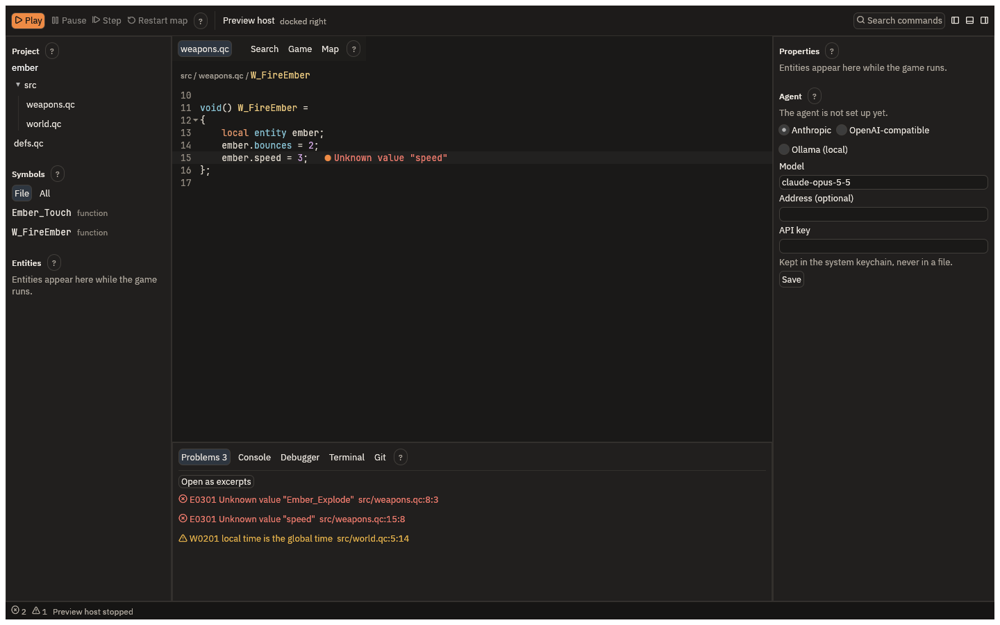

Opening a mod
QuakeC Studio opens a folder of QuakeC as a project: a mod you have, a mod you downloaded, or the starter you made in Getting started.
Open a folder
Choose Open Folder in the Project panel (on macOS, File > Open Folder…), or start the app with the folder on the command line:
quakec-studio /path/to/your/mod
The panel lists the projects you opened recently; a click opens one again.
The folder is a project when it holds one of these:
- a
quakec.toml, which names each of the project's programs (its modules), their dialect and their target engine; - a
progs.src, the file list id's compiler reads, and optionally acsprogs.srcfor client QuakeC.
A folder with only a progs.src opens in the vanilla dialect, the QuakeC id's compiler
reads. A mod written for FTEQCC, the compiler most mods use today, needs a quakec.toml that
says so, or --dialect fteqcc on the command line. The starters write their quakec.toml
for you.
What you see

- Project lists the files the project compiles, in the order the compiler reads them, as a tree.
- Symbols lists the open file's functions, globals and fields; All lists every file's.
- Problems, at the bottom, lists every error and warning with its code, message and place. The status bar counts them. A click opens the file at that place.
- The editor colours each name by what it is: a function, a field, a global, a local.
The project is checked as you type, about a third of a second after you stop, so the Problems list follows the text on screen even before you save.
Moving around the code
Cmd+Shift+P opens the command palette, every command the IDE has, searched by name, and Cmd+P opens a file by its name. In the editor, F12 goes to the definition of the name under the caret, Shift+F12 lists its references, and F2 renames it everywhere. Resting the pointer on a name shows its declaration.
Keys lists the rest, and says how to change a key or edit with Vim's keys.
Searching the project
Cmd+Shift+F opens the Search tab in the centre. Type a text to find every match in the project's files, unsaved edits included; match case, whole words or a regular expression. Each result is shown in its file with a line above and below, and can be edited in place. Replace all replaces every match, each file saved and undone on its own, and Open goes to the file at that place.
The terminal
The bottom panel's Terminal tab runs your shell in the project's folder. New terminal opens another, each in a tab of its own with its title and whether its process is still running. Type a line in the box under the output to send it to the shell.
Git
When the mod's folder is a git repository, the bottom panel's Git tab lists what changed since the last commit. Stage a whole file, or one hunk of it, write a message and press Commit. The branch list switches branches and Create branch makes one. For the file in the editor it shows the commits that changed it and, with Show blame, who last changed each line. After a merge that conflicts, each conflict has Keep ours, Keep theirs and Keep both. The editor marks the lines changed since the last commit in its gutter: green for added, amber for changed and red where lines were removed.
Building
Play builds before it starts the game, so most of the time you never build by hand. To build
alone, run project.build from the palette, or from the command line:
quakec-ide build /path/to/your/mod
The output goes to build/<mod>/progs.dat inside the project, never into your Quake folder.
Exporting for players
File > Export Mod… (on Windows and Linux, Export Mod… on the toolbar) builds the project
and writes build/<mod>.zip, which players unzip into their Quake folder. The status bar says
where it is. The zip holds the <mod> folder:
progs.dat, andcsprogs.datormenu.datwhen the project has them;- everything under the project's
maps,progs,sound,gfx,music,texturesandenvfolders, except.mapsources; - a
README.txtthat says which game the mod needs and how to install and start it; - the project's license and notice files, such as
COPYING,LICENSEorNOTICE.md.
It never includes id Software's game data. A file that is a copy of one of the game's own
files is refused with its name, so remove it from the project. To pack the assets into
pak0.pak, run project.export from the palette with pak checked. From the command line:
quakec-ide run project.export '{}' --project /path/to/your/mod